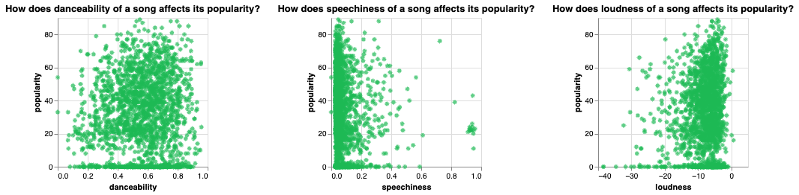

Overall Introduction
The realm of music has long been a subject of fascination,
not only for its artistic expression but also for the intricacies
that drive its popularity. In recent years, with the advent of
digital platforms and streaming services, understanding the
factors that contribute to a song's popularity has become a
subject of intense scrutiny and interest. From catchy melodies
to meaningful lyrics, various elements are believed to play a
role in determining whether a song will become a chart-topping
hit or fade into obscurity.
Research into the correlation between different aspects of a song
and its popularity serves not only to satisfy curiosity but also
holds significant practical implications. For artists and
musicians, such insights offer valuable guidance in crafting music
that resonates with a broader audience, potentially increasing their
chances of commercial success and recognition. Similarly, for record
labels and industry professionals, understanding these correlations
can inform strategic decisions regarding marketing, promotion, and
talent development.
In this study, we delve into the multifaceted aspects of music and
explore the correlations between various elements and the popularity
of songs. Through empirical analysis and statistical modeling, we aim
to uncover patterns and trends that illuminate the complex interplay
between musical composition, lyrical content, production quality, and
audience reception. By doing so, we not only contribute to the body of
knowledge surrounding the sociology of music but also provide practical
insights that may benefit artists, industry professionals, and music
enthusiasts alike.
Tasks and Introduction to the data
Our goal was to create both static and dynamic visualizations that allow the user to
explore the relationship between various aspects of a song and its popularity. While
sources like
Analyzing Music Genre Popularity and
What Makes Songs Popular? It’s All About ‘You’ focused more on the pyscological and
marketing aspects of what makes a song enjoyable and popular, we wanted data to paint the picture.
We aimed to provide an interactive experience that enables users to gain insights into the factors
that contribute to a song's success and appeal. Our static visualizations were to accomplish
this by displaying how danceability, speechiness, loudness effect popularity, while our dynamic
visualizations would do so by showing how duration determines to a songs popularity by genre.
To do this, we used
The Devastator's "Spotify Tracks Genre" dataset on Kaggle. This dataset contains information
about various songs, including their popularity, danceability, energy, key, loudness, mode,
speechiness, acousticness, instrumentalness, liveness, valence, tempo, duration, and time signature.
Below are the aspects we chose to focus on:
| Variable Name |
Details |
| popularity |
The popularity score of the track on Spotify, ranging from 0 to 100
|
| danceability |
A score (0 to 1) that represents how suitable a track is for dancing
|
| speechiness |
A score (0 to 1) that represents the presence of spoken words in a track
|
| loudness |
The loudness of the track in decibels (dB)
|
| duration_ms |
The duration of the track in milliseconds
|
| explicit |
A boolean value indicating whether the track contains explicit content
|
| energy |
A measure of the intensity and activity of a track, ranging from 0 to 1
|
With such a wide range of data (89741 unique tracks), we were able to explore the relationships
between these variables and the popularity of a song. We used various visualization techniques
to present our findings in an engaging and informative manner. The data did not require any
pre-processing as well, as it was well structured and contained only pertinent data.

Danceability vs. Popularity
In the first visualization, it can be observed that, while weak, there seems to be a positive
correlation between danceability and popularity. As the y-axis (popularity) increases, the data
sees a slight but noticable shift towards the upper right of the graph. This positive correlation
displays that making a more danceable song may allow artists to boost the song's popularity.
Speeciness vs. Popularity
In the second visualization, there is a slight negative correlation between speechiness and popularity.
It is also clear that most of the songs represented in the dataset had a low speechiness level. Since this
was a dataset from Spotify, a service that has podcasts as well as music, there were a few outliers with a
high level of speechiness which turned out to be podcasts. For the songs, it is clear that songs that are too
wordy to not tend to succeed as much as ones with less words.
Loudness vs. Popularity
In the final visualization, there is a slight positive correlation between loudness and popularity. Most data
points were towards the greater end of the x-axis. This shows that songs that are louder tend to succeed more
than quieter songs, which make it obvious why so many songs are on the louder side of the spectrum.
Summary of the three scatter plots
The key difference is that danceability shows a positive association
with popularity, while speechiness and loudness do not exhibit such
a clear relationship. This suggests that the danceability of a song,
or its ability to inspire dancing and movement, is a more important
factor in determining its overall popularity and commercial success
compared to the other two attributes. Listeners may be more drawn to
songs they can easily dance or move to, as this enhances the engaging
and entertaining experience. In contrast, the speechiness and loudness
of a song appear to be less directly tied to its widespread
popularity. Other musical, cultural, and contextual factors likely play
a bigger role in those cases. Therefore, based on the information provided
in the three scatter plots, danceability seems to have the highest impact
on a song's popularity among the three factors analyzed.
Duration vs. Popularity
To interact with this visualization, the user can click on the
dropdown and select which genre they would like to highlight. Then,
both the scatter plot and bar chart only show the data that falls into
the genre that is selected. Based on the scatter plot provided, it appears
that the duration of a song does have a relationship with its popularity, though
the connection is not entirely straightforward.
Key observations:
- Wider spread at longer durations: The data points are
more widely scattered and dispersed at the longer song
durations (towards the right side of the x-axis), indicating
that song popularity is more variable for longer-duration tracks.
- Concentration at shorter durations: The data points are more densely
clustered towards the left side of the x-axis, representing shorter
song durations. This suggests that songs with shorter durations
(e.g. under 200,000 ms or around 3 minutes) tend to be more consistently
popular.
- Lack of clear linear trend: While there is some visual pattern
in the data, it does not follow a clear linear or exponential
relationship. The scatter is more diffuse, without a strong upward or
downward sloping trend across the full duration range.
- Potential optimum duration range: The most popular songs (highest
on the y-axis) appear to be concentrated in the 150,000 ms to
300,000 ms (2.5 to 5 minute) duration range, hinting that there may
be an "optimal" duration window for maximizing song popularity.
In summary, the visualization suggests that song duration does influence popularity,
but in a more complex way. The explicit/non-explicit nature of the songs is also
overlaid on the chart, but it does not seem to be a dominant factor in determining
popularity either. Shorter durations tend to be more consistently popular, while
longer durations show wider variability in popularity. There may also be an optimal
duration range where popularity is maximized. However, other factors beyond just
duration are likely at play in determining a song's overall success and appeal.
Energy vs. Popularity of Explicit and Non-Explicit Songs
This scatter plot shows that the energy level of a song correlated positively with
its popularity. A user can interact with this visualization by selecting an explicit
status in the dropdown. The scatter plot and bar chart then show the data that falls
into the explicit status selected . When filtered by explicit status, we can see that
explicit songs show a stronger correlation between energy and popularity. In non-explicit
songs, the correlation is still positive but less strong.
Summary of Findings
Overall, it is clear that there are many different factors that contribute to the popularity of a song. A
successful song, based on our visualizations, is one that is danceable, not too wordy, loud, short in duration,
and has high energy. In the future, we can conduct studies on these individual attributes per genre. While it was
great to observe this data for all types of songs, these conclusions may be slightly different per genre and that
data may also be interesting to study. If we were to conduct that research, we could then target artists from those
genres with advice and strategies to succeed in their respective genres.